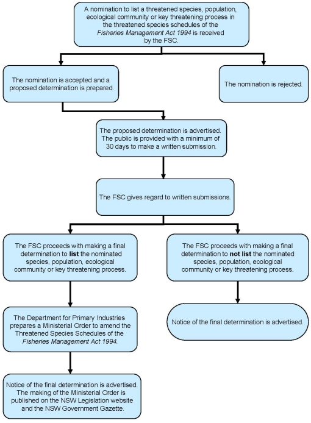

Biodiversity conservation includes the careful management of animal and plant species that are threatened with extinction by human activities. This often requires special legislation. The NSW Fisheries Management Act 1994 incorporates provisions for the protection, conservation and recovery of threatened species of fish and marine vegetation and the management of threatening processes.
The threatened species provisions of the Fisheries Management Act 1994 cover all fish (freshwater, estuarine and marine), aquatic invertebrates and marine plants. For the purposes of this Act, the following definitions are used:
The legislation includes schedules of species, populations and communities that have been classified as threatened or presumed extinct. A provision for listing key threatening processes also exists. These are listed in the following schedules:
Key threatening processes
Any person or group can nominate changes to the threatened species schedules, such as including or removing aquatic species, populations, ecological communities or key threatening processes. It is also possible to nominate a change in the level of listing, for example from Vulnerable to Endangered.
Public nominations must be made on the appropriate nomination form, be signed by the nominator and sent to the address on the form.
The Fisheries Scientific Committee (FSC) considers nominations for amendments to the Threatened Species Schedules. The FSC is an independent, expert Committee consisting of seven scientists covering the areas of marine and freshwater fish, aquatic invertebrates and marine vegetation, including algae.
On receipt of a nomination the FSC notifies the Minister for Primary Industries and Natural Resources Commission of the nomination and, if successful, prepares a proposed determination to amend the lists in Schedules 4, 4A, 5 or 6.
The FSC’s initial decision regarding a nomination is called a proposed determination. The proposed determination is placed on public exhibition for a minimum of 30 days in I&I NSW offices and notice of exhibition of the proposed determination is given in the print media. The FSC must consider all submissions received by the advertised closing date.
After considering all the public submissions received, the Committee notifies the Minister of the proposed final determination. The Minister then has two months within which to refer the matter back to the Committee for further consideration.
The Minister can only refer matters back to the FSC for reasons of a scientific nature.
The FSC’s final determination is then gazetted, the schedules are amended, the Minister and Natural Resources Commission are advised of the final determination and the person who made the nomination is notified.
Once listed, strategies to be adopted for promoting the recovery of each species, population or ecological community to a position of viability in nature and for managing each key threatening process must be set out in the I&I NSW Priorities Action Statement. Recovery and Threat Abatement Plans, may also be prepared to promote the recovery of the species, population or ecological community or to manage the Key Threatening Process.
Listing of threatened species or Key Threatening Processes also brings several other legal implications including: establishment of offences for buying, selling, harming or possessing threatened species; damaging the habitat of threatened species; declaration of critical habitat for endangered and critically endangered species; and integration with NSW land use plans and environmental assessment legislation to ensure the impacts of any development on threatened species are appropriately assessed.
